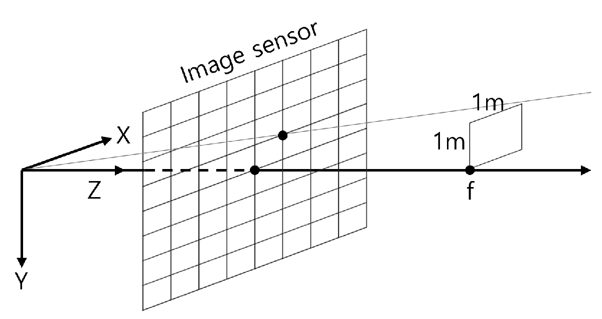

「미터 단위와 픽셀 단위가 같아지는 깊이」다. 아래에서 자세히 본다.
두 값이 다른 것은 픽셀이 정확한 정사각형이 아니기 때문이다.
여기서는 가로와 세로의 배율이 0.3 % 다르다는 뜻으로 읽으면 된다.
c_u, c_v — 주점(principal point)
광축이 영상과 만나는 픽셀. 영상 한가운데는 \((376, 240)\)인데
실제 값은 \((367.2, 248.4)\)다. 제조 오차로 9 px쯤 벗어나 있다.
radial-tangential — 왜곡 모델의 이름
중심에서 멀어질수록 커지는 방사(radial) 성분 \(k_1, k_2\)와,
렌즈와 센서가 정확히 평행하지 않아 생기는 접선(tangential) 성분 \(p_1, p_2\).
이 데이터셋에서는 \(k_1\)이 거의 전부다 — ③절에서 확인한다.
pointcloud0/data.ply — 오늘 실습에 쓴다
Leica 레이저 스캐너로 방 전체를 뜬 3차원 점군(111.8 MB).
지도의 정답이고, 오늘은 이것을 영상에 투영해 카메라 모델을 검사하는 데 쓴다.
초점거리가 픽셀 단위라는 것이 무슨 뜻인가

깊이 \(Z = f\)에 갖다 놓은 1 m × 1 m 정사각형이 정확히 한 픽셀로 보인다.
그 깊이가 곧 \(f\)다. 그래서 초점거리의 단위가 픽셀이 된다.
해석: 이 그림이 말하는 것은 \(f\)가 렌즈의 물리적 성질이 아니라
「픽셀 한 칸이 몇 도를 보는가」의 다른 표현이라는 것이다.
픽셀이 촘촘할수록 한 칸이 보는 각도가 좁아지고, 그러면 1 m가 한 픽셀로 보이는 거리가 멀어진다.
\(f\)가 커진다. 458 px이라는 값은 「픽셀 한 칸이 약 0.125°를 본다」와 같은 말이다.
동차좌표로 묶으면 익숙한 3×3 행렬이 된다.
$$
\begin{bmatrix} u \\ v \\ 1 \end{bmatrix}
= \frac{1}{Z}
\begin{bmatrix} f_u & 0 & c_u \\ 0 & f_v & c_v \\ 0 & 0 & 1 \end{bmatrix}
\begin{bmatrix} X \\ Y \\ Z \end{bmatrix}
= \frac{1}{Z} K\,\mathbf{p}_C
$$
⚠️ \(1/Z\)를 생략한 식을 자주 만난다
책과 논문에서 \(\mathbf{u} = K\mathbf{p}_C\)라고만 쓰는 경우가 많다. 동차좌표라 틀린 식은 아니다.
다만 \(Z\)를 잃어버렸다는 사실은 남는다.
\(\mathbf{p}_C = Z K^{-1}\mathbf{u}\)이므로, 픽셀만으로는 3차원 점을 복원할 수 없다.
이 한 줄이 5회 전체의 주제이자 이 강의에 IMU가 들어오는 이유다.
해석: 중심에서 1 px이면 눈에 안 보인다. 모서리에서 96 px이다.
특징점은 영상 전체에 흩어져 있으므로, 왜곡을 빼먹으면
가장자리 점들만 조용히 오염된다.
재투영 오차가 커지는데 중심 근처 점만 확인하면 아무 문제도 안 보인다.
「몇 개는 잘 맞는데 몇 개는 이상하다」는 증상이 나오면 여기부터 본다.
시야각으로 보면 더 분명하다
왜곡을 고려하면
무시하면
차이
가로 시야각
93.1°
78.7°
14.5°
세로 시야각
59.7°
55.4°
4.3°
이 카메라는 가로로 93도를 본다. 그런데 왜곡을 무시하고 \(f_u\)만으로 계산하면 79도가 나온다.
실제보다 14도 좁게 본다고 착각하게 된다.
「이 프레임에 그 랜드마크가 보일까」를 판단하는 코드에서 이 차이가 그대로 오차가 된다.
④ 역투영은 왜 어려운가
투영은 닫힌 형태다. 넣으면 바로 나온다. 거꾸로는 그렇지 않다.
\(x_d\)가 주어졌을 때 \(x\)를 구하는 식은 5차 방정식이고 닫힌 해가 없다.
그래서 반복해서 푼다. 아이디어는 단순하다 — 답이라고 가정하고 넣어 본 뒤, 어긋난 만큼 고친다.
x = x_d; y = y_d; // 첫 추측: 왜곡이 없다고 치자
반복 {
(x_d', y_d') = distort(x, y); // 지금 추측을 왜곡시켜 보고
x += (x_d - x_d'); // 어긋난 만큼 밀어 준다
y += (y_d - y_d');
}
몇 번이면 되나. 잔차 0.01 px을 기준으로 실제로 세어 봤다.
어디
반복 횟수
중심에서 20 %
3회
중심에서 40 %
5회
영상 모서리
13회
해석: 「보통 5~10회면 된다」고들 하는데, 모서리에서는 13회다.
반복 횟수를 5로 못 박아 두면 가장자리 점만 덜 풀린 채로 나온다 —
③절에서 본 것과 같은 모양의 사고다.
횟수가 아니라 잔차로 멈추게 한다.
그리고 이것이 어안(fisheye) 모델을 부담스러워하는 이유이기도 하다. 반복 비용이 더 크다.
⑤ 투영 야코비안 — 9회에서 쓴다
번들조정은 「이 3차원 점을 조금 움직이면 픽셀이 얼마나 움직이나」를 알아야 한다.
왜곡을 뺀 부분만 쓰면 이렇게 생겼다.
[인터페이스] 아래 시그니처를 바꾸지 말고 구현해 줘. Vector2d project(const Vector3d& p_C) const Vector3d unproject(const Vector2d& uv) const — 길이 1인 방향 벡터를 돌려준다 Matrix<double,2,3> dProj_dp(const Vector3d& p_C) const bool inImage(const Vector2d& uv) const
[모델] pinhole + radial-tangential, 계수는 k1 k2 p1 p2 넷.
project는 Z <= 0이면 실패를 알려 줘 — 조용히 값을 돌려주지 말아 줘.
[검증] 아래 네 시험을 같이 써 줘. 기준을 넘으면 실패로 출력한다.
① project → unproject 왕복 — 픽셀 오차 < 1e-6 px, 영상 전체에 고르게 뿌린 1000점으로
② EuRoC cam0 값으로 (752, 0) 모서리를 넣었을 때 왜곡 없는 자리와의 거리가 96.0 ± 0.5 px
③ dProj_dp를 유한차분과 대조 — 상대오차 < 1e-6
④ Z = -1인 점을 넣었을 때 실패로 처리되는가 실패하면 어느 점에서 얼마나 벌어졌는지 함께 찍어 줘.
[함정] 역투영에는 닫힌 해가 없다. 반복 횟수를 고정하지 말고 잔차로 멈춰 줘 —
모서리에서는 13회가 걸린다. 그리고 yaml의 intrinsics는
[f_u, f_v, c_u, c_v] 순서다.
[남긴다] 규약에 없어서 임의로 정한 것을 코드 맨 위에 목록으로 적어 줘.
받은 코드에서 확인할 것
□ 역투영이 횟수가 아니라 잔차로 멈추는가
□ Z <= 0 을 조용히 통과시키지 않는가 ← 통과시키면 뒤에 있는 점이 앞에 찍힌다
□ 왜곡을 정규화 좌표에서 먹이는가, 픽셀 좌표에서 먹이는가
□ 시험 ②의 숫자가 96.0 근처로 나오는가 ← 다르면 계수 순서를 의심한다
□ 임의로 정한 것 목록에 내가 동의하지 않는 항목이 있는가
그리고 오버레이가 이상할 때. 증상을 좁혀서 말한다.
점군 오버레이에서 영상 가운데 점들은 구조물과 잘 겹치는데 가장자리 점들만 20~90 px 밀려 있다.
자세는 정답 궤적을 그대로 썼다. T_BC의 축-각은 89.16°로 맞다. 원인 후보를 세 개 대고, 각각을 확인할 가장 작은 실험을 하나씩 제안해 줘.
코드는 아직 고치지 말아 줘.
🧪 오늘 만든 것이 맞는지 어떻게 아나 사람이 한다
오늘은 1단과 2단에 더해 4단(정답 부분 주입)을 처음 쓴다.
단
시험
통과 기준
여기서 걸리는 것
1
투영 → 역투영 왕복
< 1e-6 px
역투영 반복이 덜 돌았다
1
모서리 왜곡 크기
96.0 ± 0.5 px
계수 순서, 왜곡을 먹이는 좌표계
2
투영 야코비안 vs 유한차분
상대오차 < 1e-6
\(Z^2\) 항 부호
4
정답 자세로 Leica 점군 오버레이
영상 구조물과 겹친다 (눈으로)
좌표계와 카메라 모델 양쪽 전부
해석: 마지막 줄만 통과 기준이 숫자가 아니다. 그런데도 가장 강한 시험이다.
수식 검사 셋을 다 통과해도 좌표계를 반대로 곱했으면 아무 시험도 걸리지 않는데,
오버레이는 그것을 즉시 잡아낸다.
숫자로 판정할 수 없는 것을 눈으로 판정하는 자리를 하나쯤 두는 것이
이 강의에서 계속 쓰는 방식이다.
🎨 이 회차의 그림 맡긴다
점군 오버레이 세 판이다. \(T_{BC}\)를 넣은 것 · 뺀 것 · 왜곡을 뺀 것을 나란히 놓는다.
이 그림으로 판정하는 것: 무엇을 빼면 어떻게 어긋나는지를 한눈에 대조할 수 있는가.
깊이를 색으로 매기면 구조가 훨씬 잘 보인다. 점 크기는 작게 —
크게 찍으면 어긋난 것이 겹쳐 보여서 오히려 맞은 것처럼 보인다.
이 그림은 학기 내내 「좌표계가 의심스러울 때 여는 그림」이 된다.
[할 일] 점군 오버레이 세 판을 한 장의 그림으로 만드는 파이썬 스크립트를 써 줘.
같은 영상·같은 시각으로 ① 제대로 한 것 ② T_BC를 뺀 것 ③ 왜곡을 뺀 것을
가로로 나란히 놓고 각 판에 제목을 붙여 줘.
[규약] 첨부한 conventions.md대로
p_C = (T_WB * T_BC).inverse() * p_W다.
점은 깊이를 색으로 찍고 반지름은 1 px로 작게 해 줘.
[검증] 판마다 영상 안에 찍힌 점의 개수를 제목에 적어 줘.
①번 판의 개수가 ②번보다 적으면 경고를 찍어 줘 —
보통은 제대로 한 쪽이 더 많이 보인다.
[함정] Leica 점군은 1억 개에 가깝다. 전부 투영하면 안 끝난다 —
먼저 균등하게 솎아 내 줘. 그리고 Z <= 0인 점을 버리기 전에 세어서 같이 찍어 줘.
[남긴다] 몇 개로 솎았는지, 어떤 프레임을 골랐는지 적어 줘.
받은 그림에서 확인할 것
□ ①번 판에서 점이 벽·기둥의 모서리와 겹치는가
□ ②번 판이 통째로 돌아가 있는가 ← 90° 가 맞다
□ ③번 판이 가장자리에서만 밀렸는가 ← 가운데도 밀렸으면 다른 문제다
□ Z <= 0 으로 버려진 점의 개수가 그럴듯한가
□ 점 크기가 너무 커서 어긋남이 가려지지 않았는가
✅ 오늘의 점검
조금 더 알아두면 시험 범위 아님
이 강의에서 캘리브레이션은 하지 않는다 — 왜, 그리고 대신 무엇을 아나
\(K\)와 왜곡 계수를 직접 구하는 일이 캘리브레이션이다.
체커보드를 여러 각도로 찍어 최적화로 푸는 절차이고, 로봇 쪽에서는 Kalibr 같은 도구를 쓴다.
이 강의에서는 하지 않는다. EuRoC이 값을 주기 때문이고,
캘리브레이션 자체가 한 학기짜리 주제이기 때문이다.
다만 알아 둘 것이 하나 있다. 캘리브레이션 값에도 오차가 있다.
\(f_u\)가 0.5 px 틀리면 재구성된 지도의 크기가 그만큼 비례해서 틀어진다.
단안 SLAM은 원래 크기를 모르므로(5회) 이 오차가 잘 안 보이지만,
IMU를 붙여 크기를 정하고 나면(12회) 둘이 서로 안 맞는 형태로 드러난다.
「스케일이 5 % 어긋나는데 원인을 못 찾겠다」의 후보 목록에 캘리브레이션이 들어간다.
어안 렌즈는 왜 다른 모델을 쓰나
오늘 쓴 모델은 \(x = X/Z\)에서 출발한다. 그런데 시야각이 180°에 가까워지면
\(Z\)가 0이 되는 방향이 생긴다. 화면 가장자리에서 값이 무한대로 간다.
그래서 어안 카메라는 \(X/Z\) 대신 광축과 이루는 각도 \(\theta\)를 쓰는 모델
(equidistant, KB4 등)로 갈아탄다.
대신 역투영이 더 비싸진다. 오늘 본 반복법이 그대로 필요한데,
다항식 차수가 높아서 더 오래 돈다.
데이터셋을 고를 때 EuRoC을 택하고 TUM VI를 미뤄 둔 이유 중 하나가 이것이다 —
TUM VI는 어안이라 카메라 모델 회차가 통째로 어려워진다.
\(K\)에 하나 더 있는 칸 — skew
완전한 \(K\)에는 \(f_u\) 오른쪽에 skew 항 \(s\)가 하나 더 있다.
센서의 픽셀 격자가 정확한 직각이 아닐 때를 위한 칸이다.
요즘 만들어지는 이미지 센서에서 이 값은 사실상 0이다.
그래서 대부분의 라이브러리가 아예 빼 버렸고, EuRoC의 sensor.yaml에도 없다.
옛 논문에서 이 항이 보이면 「그 시절에는 있었다」로 읽으면 된다.
다음 시간(5회)에는 영상 두 장을 다룬다.
같은 점을 두 영상에서 찾았을 때 무엇을 알 수 있고 무엇을 알 수 없는지를 본다.
오늘 마지막에 나온 「픽셀만으로는 \(Z\)를 모른다」가 그 회차의 출발점이고,
영상 두 장으로도 끝내 알 수 없는 것 하나가 이 강의에 IMU가 들어오는 이유가 된다.